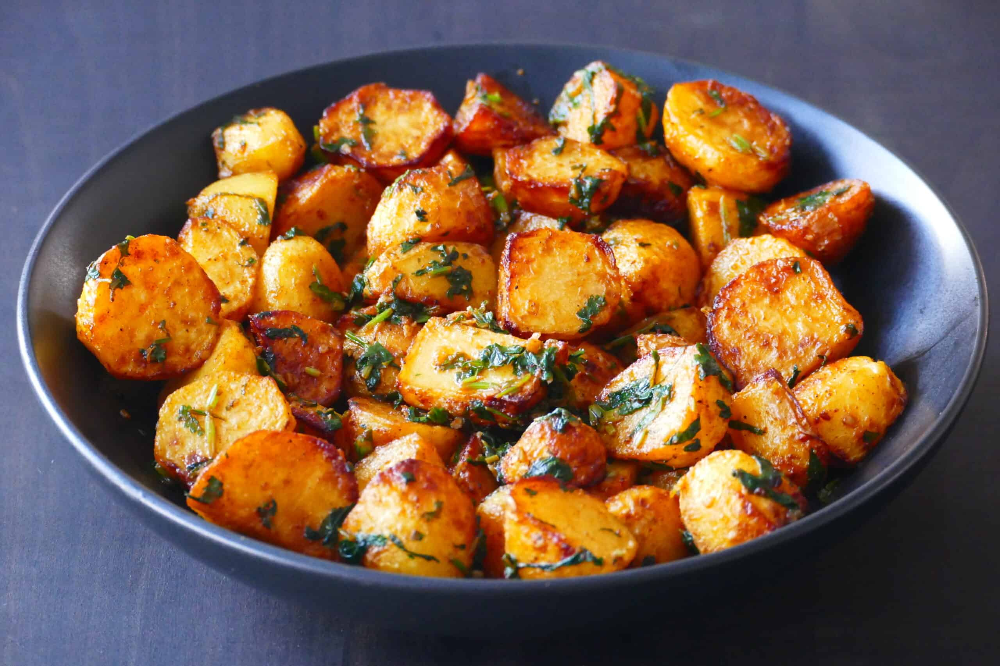

Batata Harra Recipe

Description
Batata Harra, a beloved dish in Lebanese cuisine, introduces a captivating medley of flavors through its name, which translates to "spicy potatoes." This culinary delight showcases a harmonious fusion of textures and tastes, centered around crisp, golden-brown potatoes. Infused with the warmth of olive oil, the dish gains depth from minced garlic and a tantalizing heat from red chili peppers. Seasoned with a careful blend of spices, including paprika, Batata Harra is a culinary journey that culminates in the freshness of chopped cilantro, elevating the dish with its aromatic charm. Whether served as a vibrant side dish or a standalone appetizer, Batata Harra captures the essence of Lebanese gastronomy with its spicy kick, crispy potatoes, and aromatic herbaceous notes.
Ingredients
- 4 large potatoes, peeled and diced into small cubes
- 1/4 cup olive oil
- 4 cloves garlic, minced
- 2-3 red chili peppers, finely chopped or crushed (adjust to your spice preference)
- 1 teaspoon paprika
- Salt and pepper to taste
- 1/4 cup fresh coriander (cilantro), chopped
Steps:
-
Heat the olive oil in a large pan over medium heat.
-
Add the diced potatoes to the pan and sauté until they are golden brown and crispy on the outside. Make sure the potatoes are cooked through.
-
Add the minced garlic and chopped red chili peppers to the pan. Sauté for a couple of minutes until the garlic is aromatic and the chili peppers are incorporated.
-
Sprinkle paprika, salt, and pepper over the potatoes, adjusting the quantities to taste. Stir to evenly coat the potatoes with the spices.
-
Just before serving, stir in the chopped fresh coriander (cilantro) for a burst of freshness.
-
Serve the Batata Harra hot as a side dish or appetizer.